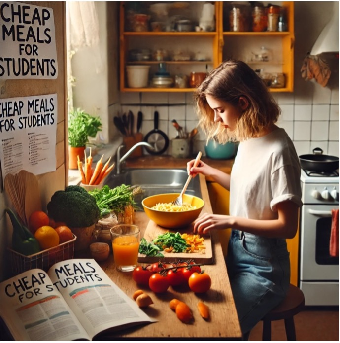

Billig mad på SU: Nemme og lækre retter til det stramme budget
Få styr på dit madbudget
At være ung og studerende kan være en udfordring, især når det kommer til at finde både sund og budgetvenlig mad. Mange studerende oplever, at pengene er knappe, og tiden til madlavning er begrænset. Men fortvivl ikke! Her får du tips til at lave billigt mad, der både er nemt at lave og godt for din sundhed.
Sundhed og sparsommelighed
Det er en udfordring at finde inspiration til sund aftensmad, når man har travlt med studierne og sociale aktiviteter. Mange unge føler, at de kun har råd til hurtige og usunde løsninger, hvilket kan føre til en ubalance i kost og helbred. Hvordan kan du som studerende få en sund, velsmagende og samtidig budgetvenlig aftensmad?
Enkelte opskrifter til travle dage
Heldigvis er der masser af muligheder for at lave billigt mad uden at gå på kompromis med smag og næring. Her er nogle enkle opskrifter og idéer, der vil inspirere dig til at lave lækre måltider
• Chili con Carne: Denne klassiker er perfekt til store portioner. Brug bønner, hakket oksekød og tomater. Chili'en kan nemt laves i store mængder og gemmes i fryseren til travle dage. Det er en sund og proteinrig ret, der holder dig mæt.
• Pasta med Grøntsager: Kog fuldkornspasta og tilsæt sæsonens grøntsager som broccoli, gulerødder og squash. Drys lidt olivenolie og parmesan over. Denne ret er ikke kun sund, men også hurtig at forberede, så du kan få mere tid til studierne.
• Kylling og Grøntsager i Gryde: Tag kyllingelår og dine yndlingsgrøntsager, og lad det simre i en gryde med krydderier. Kyllingelår er ofte billigere end brystfileter, og denne ret kræver minimal forberedelse, hvilket gør den perfekt til en travl hverdag.
• Ris og Bønner: Invester i basisvarer som ris og bønner. Disse fødevarer er ikke kun billige, men også fyldt med næring. Du kan lave en lækker bønnesalat eller en risret, der holder dig mæt i flere timer.
Gør madlavning sjovt og socialt
Det er tid til at tage kontrol over din madlavning og investere i sundere valg. Prøv disse opskrifter og udforsk flere måder at lave billigt mad på. Del dine egne opskrifter og tips med vennerne, så I kan støtte hinanden i at spise sundt og billigt på SU. Gør madlavning til en sjov aktivitet og få mere ud af dit budget. Giv dig selv muligheden for at nyde sund, lækker mad, der holder dig energisk gennem hele studietiden!